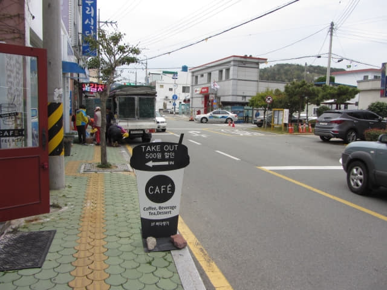
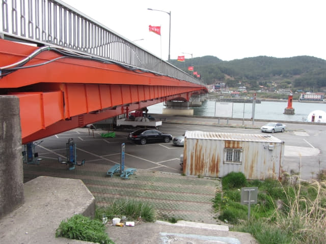
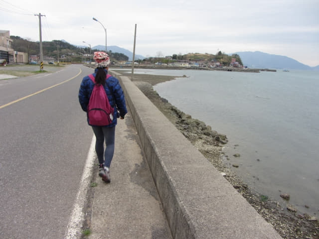
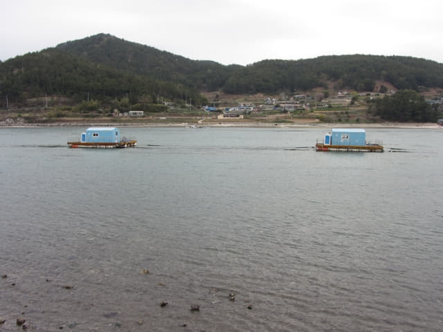

在昌善大橋前的丹杭十字路口的山坡上意外地登上了一輛神奇巴士, 於下午五時十分來到昌善橋頭的三東面的「삼동면사무소」巴士站, 如果不是搭乘了這輛這神奇巴士, 恐怕天黑前也未必來到這裡! 今天接連遇上熱心的巴士車長, 只可以說十分幸運!
接著是今天最後一個行程 — 參觀知足海峽(지족해협)最原始捕漁方式的竹防廉 (죽방렴 Jukbangryeom)。
竹防廉 世界唯一最原始捕漁方式
竹防廉是韓國最傳統原始漁業, 有五百多年的歷史, 也是在南海方可看見的世界唯一且獨特的捕魚工具與景觀。竹防廉是指在海邊以扇狀插立竹子捕捉魚兒的方法, 從昌善橋往海邊眺望, 浮在海面上V字型的捕魚工具便是竹防廉。竹防廉利用知足海峽水流湍急、水淺的特點來捕捉魚群, 由於水流快, 順流進入竹防廉內非常容易, 因竹廉間的空隙很窄狹, 不足讓魚兒通過, 魚兒必須後退才能離開竹防廉, 但由於逆水關係, 十分困難, 直至筋疲力盡, 就這樣被困竹防廉內, 為了防止魚兒逃脫, 在退潮時便要收穫。
竹防廉基本原理如下圖所示, 每個地方因環境、水流速度而設計有些不同, 但基本原理是一樣的。
知足海峽竹防廉主要漁獲是鯷魚, 也常捕到帶魚、秋刀魚、鯧魚、蝦子等魚類。特別是竹防鯷魚, 由於捕獲數量有限, 用竹防廉所捉到的鯷魚在韓國是價格最貴的, 暢銷於全韓國, 鯷魚料理也是當地著名的美食。另外在竹防廉所欣賞的夕陽也別有情趣！
竹防廉離巴士站不太遠, 從昌善橋頭沿知足海峽旁的馬路一直朝西走便是, 估計步行約半小時。

下了車, 只感覺寒風刺骨, 不禁打了一個寒噤 , 明明下午的天氣還是和暖的, 現在卻變得那裡寒冷。
沿馬路向前走。

經過一間郵政局, 看見旁邊有一個計程車站, 停靠了幾輛計程車, 總算安了心, 起碼不會被困這裡, 如果沒有巴士, 必要時頂多是乘計程車返回南海酒店。
來到一個 T 字路口, 在這裡轉右。
昌善橋 (창선교) — 連接南海郡 南海島、昌善島的大橋
橫躺知足海峽(지족해협)兩岸的昌善橋就在前面不遠處, 走幾十步便來到橋頭。
沿昌善橋橋頭旁的崎嶇石級往下走, 穿過一個橋底的停車場, 便來到知足海峽的岸邊。

知足海峽(지족해협) — 南海郡 南海島、昌善島 間的海峽
沿知足海峽岸邊的道路朝西走, 風景十分優美。
從橋下慢慢穿過昌善橋。
昌善橋對岸便是昌善島(창선도), 南海郡第二大的島嶼。
沿知足海峽岸邊繼續向前走, 風很猛烈, 又冷, 非常不舒服。
路旁的小屋有一群貓咪, 天氣那麼寒冷, 返回屋內吧!
已經看見第一個竹防廉。
繼續往前走, 天氣越來越冷, 幾乎想放棄往竹防廉。

哈哈~~~ 路邊又有一個油菜花田。
知足海峽中的船屋。可惜太陽伯伯躲藏在雲後, 否則這裡是欣賞黃昏日落景色的最佳地點。

沿途經過的餐廳, 價錢太貴, 看看算了!
拐個彎, 看見伸出海中的橋樑, 那裡便是竹防廉戶外展示館。